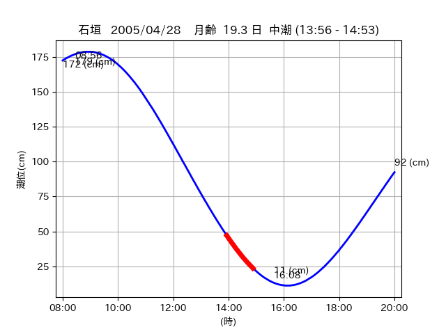

<!DOCTYPE html>
<html>
<head>
    
    <meta http-equiv="content-type" content="text/html; charset=UTF-8" />
    
        <script>
            L_NO_TOUCH = false;
            L_DISABLE_3D = false;
        </script>
    
    <style>html, body {width: 100%;height: 100%;margin: 0;padding: 0;}</style>
    <style>#map {position:absolute;top:0;bottom:0;right:0;left:0;}</style>
    <script src="https://cdn.jsdelivr.net/npm/leaflet@1.9.3/dist/leaflet.js"></script>
    <script src="https://code.jquery.com/jquery-3.7.1.min.js"></script>
    <script src="https://cdn.jsdelivr.net/npm/bootstrap@5.2.2/dist/js/bootstrap.bundle.min.js"></script>
    <script src="https://cdnjs.cloudflare.com/ajax/libs/Leaflet.awesome-markers/2.0.2/leaflet.awesome-markers.js"></script>
    <link rel="stylesheet" href="https://cdn.jsdelivr.net/npm/leaflet@1.9.3/dist/leaflet.css"/>
    <link rel="stylesheet" href="https://cdn.jsdelivr.net/npm/bootstrap@5.2.2/dist/css/bootstrap.min.css"/>
    <link rel="stylesheet" href="https://netdna.bootstrapcdn.com/bootstrap/3.0.0/css/bootstrap-glyphicons.css"/>
    <link rel="stylesheet" href="https://cdn.jsdelivr.net/npm/@fortawesome/fontawesome-free@6.2.0/css/all.min.css"/>
    <link rel="stylesheet" href="https://cdnjs.cloudflare.com/ajax/libs/Leaflet.awesome-markers/2.0.2/leaflet.awesome-markers.css"/>
    <link rel="stylesheet" href="https://cdn.jsdelivr.net/gh/python-visualization/folium/folium/templates/leaflet.awesome.rotate.min.css"/>
    
            <meta name="viewport" content="width=device-width,
                initial-scale=1.0, maximum-scale=1.0, user-scalable=no" />
            <style>
                #map_dac2bf8fe3079c5e4402be7952e5c525 {
                    position: relative;
                    width: 2048.0px;
                    height: 1600.0px;
                    left: 0.0%;
                    top: 0.0%;
                }
                .leaflet-container { font-size: 1rem; }
            </style>
        
</head>
<body>
    
    
            <div class="folium-map" id="map_dac2bf8fe3079c5e4402be7952e5c525" ></div>
        
</body>
<script>
    
    
            var map_dac2bf8fe3079c5e4402be7952e5c525 = L.map(
                "map_dac2bf8fe3079c5e4402be7952e5c525",
                {
                    center: [24.214, 124.022],
                    crs: L.CRS.EPSG3857,
                    ...{
  "zoom": 12,
  "zoomControl": true,
  "preferCanvas": false,
}

                }
            );

            

        
    
            var tile_layer_f8d2002c51371998f664d9967dec7517 = L.tileLayer(
                "https://cyberjapandata.gsi.go.jp/xyz/seamlessphoto/{z}/{x}/{y}.jpg",
                {
  "minZoom": 0,
  "maxZoom": 18,
  "maxNativeZoom": 18,
  "noWrap": false,
  "attribution": "\u5730\u7406\u9662\u5730\u56f3",
  "subdomains": "abc",
  "detectRetina": false,
  "tms": false,
  "opacity": 1,
}

            );
        
    
            tile_layer_f8d2002c51371998f664d9967dec7517.addTo(map_dac2bf8fe3079c5e4402be7952e5c525);
        
    
            var marker_0952d817537fe174d11db03f7ed5738a = L.marker(
                [24.2336, 124.042],
                {
}
            ).addTo(map_dac2bf8fe3079c5e4402be7952e5c525);
        
    
            var icon_32a8d982dfb4f726114d006a8a2c821d = L.AwesomeMarkers.icon(
                {
  "markerColor": "blue",
  "iconColor": "white",
  "icon": "info-sign",
  "prefix": "glyphicon",
  "extraClasses": "fa-rotate-0",
}
            );
        
    
        var popup_ba94085e10f11f68dcfd43ea4d90aa13 = L.popup({
  "maxWidth": "100%",
});

        
            
                var html_047f54a6923083e78a85b9f76769f1d8 = $(`<div id="html_047f54a6923083e78a85b9f76769f1d8" style="width: 100.0%; height: 100.0%;"><table><tr><td></td></tr><tr><td><center>20050428 No.1 </center></table></td></tr></table</div>`)[0];
                popup_ba94085e10f11f68dcfd43ea4d90aa13.setContent(html_047f54a6923083e78a85b9f76769f1d8);
            
        

        marker_0952d817537fe174d11db03f7ed5738a.bindPopup(popup_ba94085e10f11f68dcfd43ea4d90aa13)
        ;

        
    
    
                marker_0952d817537fe174d11db03f7ed5738a.setIcon(icon_32a8d982dfb4f726114d006a8a2c821d);
            
    
            var marker_96998f495f2a76b634e6b98e08daa860 = L.marker(
                [24.2144, 124.022],
                {
}
            ).addTo(map_dac2bf8fe3079c5e4402be7952e5c525);
        
    
            var icon_60481fc983c41ae5fb4b101b6b09691f = L.AwesomeMarkers.icon(
                {
  "markerColor": "blue",
  "iconColor": "white",
  "icon": "info-sign",
  "prefix": "glyphicon",
  "extraClasses": "fa-rotate-0",
}
            );
        
    
        var popup_3a267bf6aca3250b9cc3b2c45edaafa6 = L.popup({
  "maxWidth": "100%",
});

        
            
                var html_8c0532953767462d3b39e570e5384d7b = $(`<div id="html_8c0532953767462d3b39e570e5384d7b" style="width: 100.0%; height: 100.0%;"><table><tr><td></td></tr><tr><td><center>20050428 No.2 </center></table></td></tr></table</div>`)[0];
                popup_3a267bf6aca3250b9cc3b2c45edaafa6.setContent(html_8c0532953767462d3b39e570e5384d7b);
            
        

        marker_96998f495f2a76b634e6b98e08daa860.bindPopup(popup_3a267bf6aca3250b9cc3b2c45edaafa6)
        ;

        
    
    
                marker_96998f495f2a76b634e6b98e08daa860.setIcon(icon_60481fc983c41ae5fb4b101b6b09691f);
            
</script>
</html>